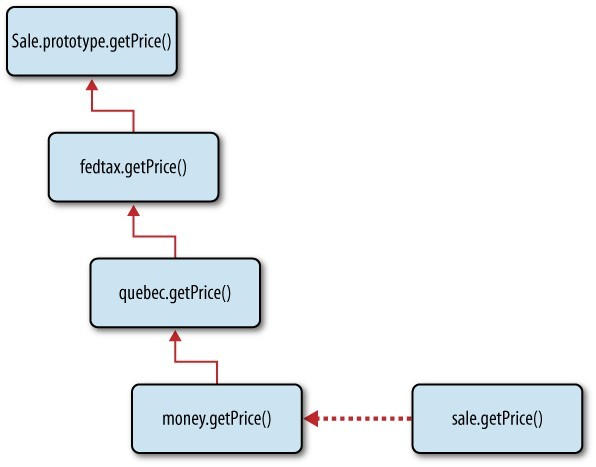
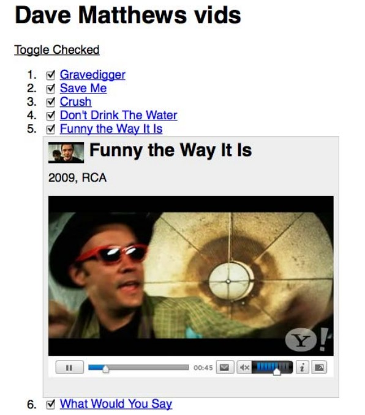
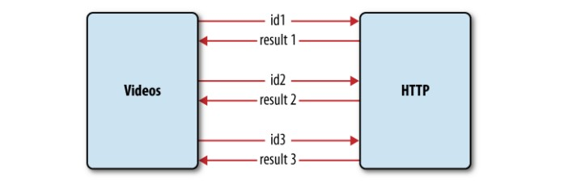

在GoF（Gang of Four）的书中提出的设计模式为面向对象的软件设计中遇到的一些普遍问题提供了解决方案。它们已经诞生很久了，而且被证实在很多情况下是很有效的。这正是你需要熟悉它的原因，也是我们要讨论它的原因。
尽管这些设计模式跟语言和具体的实现方式无关，但它们多年来被关注到的方面仍然主要是在强类型静态语言比如C++和Java中的应用。
JavaScript作为一种基于原型的弱类型动态语言，有些时候实现某些模式时相当简单，甚至不费吹灰之力。
让我们从第一个例子——单例模式——来看一下在JavaScript中和静态的基于类的语言有什么不同。
单例
单例模式的核心思想是让指定的类只存在唯一一个实例。这意味着当你第二次使用相同的类去创建对象的时候，你得到的应该和第一次创建的是同一个对象。
这如何应用到JavaScript中呢？在JavaScript中没有类，只有对象。当你创建一个对象时，事实上根本没有另一个对象和它一样，这个对象其实已经是一个单例。使用对象字面量创建一个简单的对象也是一种单例的例子：
var obj = {
myprop: 'my value'
};
在JavaScript中，对象永远不会相等，除非它们是同一个对象，所以即使你创建一个看起来完全一样的对象，它也不会和前面的对象相等：
var obj2 = {
myprop: 'my value'
};
obj === obj2; // false
obj == obj2; // false
所以你可以说当你每次使用对象字面量创建一个对象的时候就是在创建一个单例，并没有什么特别的语法牵涉进来。
需要注意的是，有的时候当人们在JavaScript中提出“单例”的时候，它们可能是在指第五章讨论过的“模块模式”。
使用new
JavaScript没有类，所以一字一句地说单例的定义并没有什么意义。但是JavaScript有使用new、通过构造函数来创建对象的语法，有时候你可能需要这种语法下的一个单例实现。这也就是说当你使用new、通过同一个构造函数来创建多个对象的时候，你应该只是得到同一个对象的不同引用。
温馨提示：从一个实用模式的角度来说，下面的讨论并不是那么有用，只是更多地在模拟一些语言中关于这个模式的一些问题的解决方案。这些语言主要是（静态强类型的）基于类的语言，在这些语言中，函数并不是“一等公民”。
下面的代码片段展示了期望的结果（假设你忽略了多元宇宙的设想，接受了只有一个宇宙的观点）：
var uni = new Universe();
var uni2 = new Universe();
uni === uni2; // true
在这个例子中，uni只在构造函数第一次被调用时创建。第二次（以及后续更多次）调用时，同一个uni对象被返回。这就是为什么uni === uni2的原因——因为它们实际上是同一个对象的两个引用。那么怎么在JavaScript达到这个效果呢？
当对象实例this被创建时，你需要在Universe()构造函数中缓存它，以便在第二次调用的时候返回。有几种选择可以达到这种效果：
- 你可以使用一个全局变量来存储实例。不推荐使用这种方法，因为通常我们认为使用全局变量是不好的。而且，任何人都可以改写全局变量的值，甚至可能是无意中改写。所以我们不再讨论这种方案。
- 你也可以将对象实例缓存在构造函数的属性中。在JavaScript中，函数也是对象，所以它们也可以有属性。你可以写一些类似
Universe.instance的属性来缓存对象。这是一种漂亮干净的解决方案，不足之处是instance属性仍然是可以被公开访问的，别人写的代码可能修改它，这样就会失去这个实例。 - 你可以将实例包裹在闭包中。这可以保持实例是私有的，不会在构造函数之外被修改，代价是一个额外的闭包。
让我们来看一下第二种和第三种方案的实现示例。
将实例放到静态属性中
下面是一个将唯一的实例放入Universe()构造函数的一个静态属性中的例子：
function Universe() {
// 实例是否已经存在？
if (typeof Universe.instance === "object") {
return Universe.instance;
}
// 处理普通逻辑
this.start_time = 0;
this.bang = "Big";
// 缓存实例
Universe.instance = this;
// 隐式return：
// return this;
}
// 测试
var uni = new Universe();
var uni2 = new Universe();
uni === uni2; // true
如你所见，这是一种直接有效的解决方案，唯一的缺陷是instance是可被公开访问的。一般来说它被其它代码误删改的可能是很小的（起码比全局变量instance要小得多），但是仍然是有可能的。
将实例放到闭包中
另一种实现基于类的单例模式的方法是使用一个闭包来保护这个唯一的实例。你可以通过第五章讨论过的“私有静态成员模式”来实现。唯一的秘密就是重写构造函数：
function Universe() {
// 缓存实例
var instance = this;
// 处理普通逻辑
this.start_time = 0;
this.bang = "Big";
// 重写构造函数
Universe = function () {
return instance;
};
}
// 测试
var uni = new Universe();
var uni2 = new Universe();
uni === uni2; // true
第一次调用时，原来的构造函数被调用并且正常返回this。在后续的调用中，被重写的构造函数被调用。被重写的这个构造函数可以通过闭包访问私有的instance变量并且将它返回。
这个实现实际上也是第四章讨论的重定义函数的又一个例子。如我们讨论过的一样，这种模式的缺点是被重写的函数（在这个例子中就是构造函数Universe()）将丢失那些在初始定义和重新定义之间添加的属性。在这个例子中，任何添加到Universe()的原型上的属性将不会被链接到使用原来的实现创建的实例上。（注：这里的“原来的实现”是指实例是由未被重写的构造函数创建的，而Universe()则是被重写的构造函数。）
下面我们通过一些测试来展示这个问题：
// 添加成员到原型
Universe.prototype.nothing = true;
var uni = new Universe();
// 在创建一个对象后再添加成员到原型
Universe.prototype.everything = true;
var uni2 = new Universe();
// 测试：
// 只有原始的原型被链接到对象上
uni.nothing; // true
uni2.nothing; // true
uni.everything; // undefined
uni2.everything; // undefined
// constructor看起来是对的
uni.constructor.name; // "Universe"
// 但其实不然
uni.constructor === Universe; // false
uni.constructor不再和Universe()相同的原因是uni.constructor仍然是指向原来的构造函数，而不是被重新定义的那个。
如果一定要让prototype和constructor的指向像我们期望的那样，可以通过一些调整来做到：
function Universe() {
// 缓存实例
var instance;
// 重写构造函数
Universe = function Universe() {
return instance;
};
// 重写prototype属性
Universe.prototype = this;
// 创建实例
instance = new Universe();
// 重写constructor属性
instance.constructor = Universe;
// 其它的功能代码
instance.start_time = 0;
instance.bang = "Big";
return instance;
}
现在所有的测试结果都可以像我们期望的那样了：
// 修改原型，创建对象
Universe.prototype.nothing = true; // true
var uni = new Universe();
Universe.prototype.everything = true; // true
var uni2 = new Universe();
// 它们是同一个实例
uni === uni2; // true
// 所有的原型上的属性都正常工作，不管是什么时候在哪添加的
uni.nothing && uni.everything && uni2.nothing && uni2.everything; // true
// 普通成员也可以正常工作
uni.bang; // "Big"
// constructor指向正确
uni.constructor === Universe; // true
另一种可选的解决方案是将构造函数和实例包在一个即时函数中。当构造函数第一次被调用的时候，它返回一个对象并且将私有的instance指向它。在后续调用时，构造函数只是简单地返回这个私有变量。在这种新的实现下，前面所有的测试代码也会和期望的一样：
var Universe;
(function () {
var instance;
Universe = function Universe() {
if (instance) {
return instance;
}
instance = this;
// 功能代码
this.start_time = 0;
this.bang = "Big";
};
}());
工厂模式
使用工厂模式的目的就是创建对象。它通常被在类或者类的静态方法中实现，目的是：
- 执行在建立相似的对象时进行的一些重复操作
- 让工厂的使用者在编译阶段创建对象时不必知道它的特定类型（类）
第二点在静态的基于类的语言中更重要，因为在（编译阶段）提前不知道类的情况下，创建类的实例是一件多少有些特殊的行为。但在JavaScript中，这部分的实现却是相当容易的事情。
使用工厂方法（或类）创建的对象被设计为从同一个父对象继承；它们是实现一些特定的功能的子类。有些时候这个共同的父对象就是包含工厂方法的同一个类。
我们来看一个示例实现，我们有：
- 一个共同的父构造函数
CarMaker()。 CarMaker()的一个静态方法叫factory()，用来创建car对象。- 特定的从
CarMaker()继承而来的构造函数CarMaker.Compact()，CarMaker.SUV()，CarMaker.Convertible()。它们都被定义为父构造函数的静态属性以便保持全局空间干净，同时在需要的时候我们也知道在哪里找到它们。
我们来看一下已经完成的实现会怎么被使用：
var corolla = CarMaker.factory('Compact');
var solstice = CarMaker.factory('Convertible');
var cherokee = CarMaker.factory('SUV');
corolla.drive(); // "Vroom, I have 4 doors"
solstice.drive(); // "Vroom, I have 2 doors"
cherokee.drive(); // "Vroom, I have 17 doors"
这一段：
var corolla = CarMaker.factory('Compact');
可能是工厂模式中最为人熟知的。你有一个方法可以在运行时接受一个表示类型的字符串，然后它创建并返回了一个和请求的类型一样的对象。这里没有使用new的构造函数，也没有看到任何对象字面量，仅仅只有一个函数根据一个字符串指定的类型创建了对象。
这里是一个工厂模式的示例实现，它能让上面的代码片段工作：
// 父构造函数
function CarMaker() {}
// 父构造函数的方法
CarMaker.prototype.drive = function () {
return "Vroom, I have " + this.doors + " doors";
};
// 静态工厂方法factory
CarMaker.factory = function (type) {
var constr = type,
newcar;
// 如果指定类型的构造函数不存在则报错
if (typeof CarMaker[constr] !== "function") {
throw {
name: "Error",
message: constr + " doesn't exist"
};
}
// 现在我们确认要用到的构造函数是存在的了
// 让它继承自父构造函数，但只继承一次
if (typeof CarMaker[constr].prototype.drive !== "function") {
CarMaker[constr].prototype = new CarMaker();
}
// 创建一个新实例
newcar = new CarMaker[constr]();
// 这里可以选择性地调用一些方法，然后返回实例
return newcar;
};
// 创建特定类型的构造函数
CarMaker.Compact = function () {
this.doors = 4;
};
CarMaker.Convertible = function () {
this.doors = 2;
};
CarMaker.SUV = function () {
this.doors = 24;
};
工厂模式的实现中没有什么是特别困难的，你需要做的仅仅是寻找请求类型的对象构造函数。在这个例子中，使用了一个简单的名字转换以便映射对象类型和创建对象的构造函数。继承的部分只是一个公共的重复代码片段的示例，它可以被放到工厂方法中而不是被每个构造函数的类型所重复。（译注：指原型继承的代码可以在factory()方法以外执行，而不是放到factory()中每调用一次都要执行一次。）
内置对象工厂
为了说明工厂模式应用之广泛，我们来看一下内置的全局构造函数Object()。它的行为很像工厂，因为它根据不同的输入创建不同的对象。如果传入一个数字，它会使用Number()构造函数创建一个对象。在传入字符串和布尔值的时候也会发生类似的事情。任何其它的值（包括空值）将会创建一个正常的对象。
下面是这种行为的例子和测试，注意Object()调用时可以不用加new：
var o = new Object(),
n = new Object(1),
s = Object('1'),
b = Object(true);
// 测试
o.constructor === Object; // true
n.constructor === Number; // true
s.constructor === String; // true
b.constructor === Boolean; // true
Object()也是一个工厂这一事实可能没有太多实际用处，仅仅是觉得值得作为一个例子提一下，告诉我们工厂模式是随处可见的。
遍历模式
在遍历模式中，你有一些含有有序聚合数据的对象。这些数据可能在内部用一种复杂的结构存储着，但是你希望提供一种简单的方法来访问这种结构中的每个元素。数据的使用者不需要知道你是怎样组织你的数据的，他们只需要操作一个个独立的元素。
在遍历模式中，你的对象需要提供一个next()方法。按顺序调用next()方法必须返回序列中的下一个元素，但是“下一个”在你的特定的数据结构中指什么是由你自己来决定的。
假设你的对象叫agg，你可以通过简单地在循环中调用next()来访问每个数据元素，像这样：
var element;
while (element = agg.next()) {
// 访问element……
console.log(element);
}
在遍历模式中，聚合对象通常也会提供一个方便的方法hasNext()，这样对象的使用者就可以知道他们已经获取到你数据的最后一个元素。当使用hasNext()来按顺序访问所有元素时，是像这样的：
while (agg.hasNext()) {
// 访问element……
console.log(agg.next());
}
装饰模式
在装饰模式中，一些额外的功能可以在运行时被动态地添加到一个对象中。在静态的基于类的语言中，处理这个问题可能是个挑战，但是在JavaScript中，对象本来就是可变的，所以给一个对象添加额外的功能本身并不是什么问题。
装饰模式的一个很方便的特性是可以对我们需要的特性进行定制和配置。刚开始时，我们有一个拥有基本功能的对象，然后可以从可用的装饰中去挑选一些需要用到的去增强这个对象，如果有必要的话，还可以指定增强的顺序。
用法
我们来看一下这个模式的用法示例。假设你正在做一个卖东西的web应用，每个新交易是一个新的sale对象。这个对象“知道”交易的价格并且可以通过调用sale.getPrice()方法返回。根据环境的不同，你可以开始用一些额外的功能来装饰这个对象。假设一个场景是这笔交易是发生在加拿大的一个省Québec，在这种情况下，购买者需要付联邦税和Québec省税。根据装饰模式的用法，你需要指明使用联邦税装饰器和Québec省税装饰器来装饰这个对象。然后你还可以给这个对象装饰一些价格格式的功能。这个场景的使用方式可能是像这样：
var sale = new Sale(100); // 价格是100美元
sale = sale.decorate('fedtax'); // 加上联邦税
sale = sale.decorate('quebec'); // 加上省税
sale = sale.decorate('money'); // 格式化
sale.getPrice(); // "$112.88"
在另一种场景下，购买者在一个不需要交省税的省，并且你想用加拿大元的格式来显示价格，你可以这样做：
var sale = new Sale(100); // 价格是100美元
sale = sale.decorate('fedtax'); // 加上联邦税
sale = sale.decorate('cdn'); // 用加拿大元格式化
sale.getPrice(); // "CDN$ 105.00"
如你所见，这种方法可以在运行时很灵活地添加功能和调整对象。我们来看一下如何来实现这种模式。
实现
一种实现装饰模式的方法是让每个装饰器成为一个拥有应该被重写的方法的对象。每个装饰器实际上是继承自已经被前一个装饰器增强过的对象。装饰器的每个方法都会调用父对象（继承自的对象）的同名方法并取得值，然后做一些额外的处理。
最终的效果就是当你在第一个例子中调用sale.getPrice()时，实际上是在调用money装饰器的方法（图7-1）。但是因为每个装饰器会先调用父对象的方法，money的getPrice()先调用quebec的getPrice()，而它又会去调用fedtax的getPrice()方法，依次类推。这个链会一直走到原始的未经装饰的由Sale()构造函数实现的getPrice()。

图7-1 装饰模式的实现
这个实现以一个构造函数和一个原型方法开始：
function Sale(price) {
this.price = price || 100;
}
Sale.prototype.getPrice = function () {
return this.price;
};
装饰器对象将都被作为构造函数的属性实现：
Sale.decorators = {};
我们来看一个装饰器的例子。这是一个对象，实现了一个自定义的getPrice()方法。注意这个方法首先从父对象的方法中取值然后修改这个值：
Sale.decorators.fedtax = {
getPrice: function () {
var price = this.uber.getPrice();
price += price * 5 / 100;
return price;
}
};
使用类似的方法我们可以实现任意多个需要的装饰器。它们的实现方式像插件一样来扩展核心的Sale()的功能。它们甚至可以被放到额外的文件中，被第三方的开发者来开发和共享：
Sale.decorators.quebec = {
getPrice: function () {
var price = this.uber.getPrice();
price += price * 7.5 / 100;
return price;
}
};
Sale.decorators.money = {
getPrice: function () {
return "$" + this.uber.getPrice().toFixed(2);
}
};
Sale.decorators.cdn = {
getPrice: function () {
return "CDN$ " + this.uber.getPrice().toFixed(2);
}
};
最后我们来看decorate()这个神奇的方法，它把所有上面说的片段都串起来了。记住它是这样被调用的：
sale = sale.decorate('fedtax');
字符串'fedtax'对应在Sale.decorators.fedtax中实现的对象。被装饰过的最新的对象newobj将从现在有的对象（也就是this对象，它要么是原始的对象，要么是经过最后一个装饰器装饰过的对象）中继承。实现这一部分需要用到前面章节中提到的临时构造函数模式。我们也设置一个uber属性给newobj以便子对象可以访问到父对象。然后我们从装饰器中复制所有额外的属性到被装饰的对象newobj中。最后，在我们的例子中，newobj被返回并且成为被更新过的sale对象。
Sale.prototype.decorate = function (decorator) {
var F = function () {},
overrides = this.constructor.decorators[decorator],
i, newobj;
F.prototype = this;
newobj = new F();
newobj.uber = F.prototype;
for (i in overrides) {
if (overrides.hasOwnProperty(i)) {
newobj[i] = overrides[i];
}
}
return newobj;
};
使用列表实现
我们来看另一个明显不同的实现方法，得益于JavaScript的动态特性，它完全不需要使用继承。同时，我们也可以简单地将前一个方面的结果作为参数传给下一个方法，而不需要每一个方法都去调用前一个方法。
这样的实现方法还允许很容易地反装饰（undecorating）或者撤销一个装饰，这仅仅需要从一个装饰器列表中移除一个条目。
用法示例也会明显简单一些，因为我们不需要将decorate()的返回值赋值给对象。在这个实现中，decorate()不对对象做任何事情，它只是简单地将装饰器加入到一个列表中：
var sale = new Sale(100); // 价格是100美元
sale.decorate('fedtax'); // 加上联邦税
sale.decorate('quebec'); // 加上省税
sale.decorate('money'); // 格式化
sale.getPrice(); // "$112.88"
Sale()构造函数现在有了一个作为自己属性存在的装饰器列表：
function Sale(price) {
this.price = price || 100;
this.decorators_list = [];
}
可用的装饰器仍然被实现为Sale.decorators的属性。注意getPrice()方法现在更简单了，因为它们不需要调用父对象的getPrice()来获取结果，结果已经作为参数传递给它们了：
Sale.decorators = {};
Sale.decorators.fedtax = {
getPrice: function (price) {
return price + price * 5 / 100;
}
};
Sale.decorators.quebec = {
getPrice: function (price) {
return price + price * 7.5 / 100;
}
};
Sale.decorators.money = {
getPrice: function (price) {
return "$" + price.toFixed(2);
}
};
最有趣的部分发生在父对象的decorate()和getPrice()方法上。在前一种实现方式中，decorate()还是多少有些复杂，而getPrice()十分简单。在这种实现方式中事情反过来了：decorate()只需要往列表中添加条目而getPrice()做了其它所有的工作，包括遍历现在添加的装饰器的列表，然后调用它们的getPrice()方法并将结果传递下去：
Sale.prototype.decorate = function (decorator) {
this.decorators_list.push(decorator);
};
Sale.prototype.getPrice = function () {
var price = this.price,
i,
max = this.decorators_list.length,
name;
for (i = 0; i < max; i += 1) {
name = this.decorators_list[i];
price = Sale.decorators[name].getPrice(price);
}
return price;
};
装饰模式的第二种实现方式更简单一些，并且没有引入继承。装饰的方法也会简单。所有的工作都由“同意”被装饰的方法来做。在这个示例实现中，getPrice()是唯一被允许装饰的方法。如果你想有更多可以被装饰的方法，那遍历装饰器列表的工作就需要由每个方法重复去做。但是，这可以很容易地被抽象到一个辅助方法中，给它传一个方法然后使这个方法“可被装饰”。如果这样实现的话，decorators_list属性就应该是一个对象，它的属性名字是方法名，值是装饰器对象的数组。
策略模式
策略模式允许在运行的时候选择算法。你的代码的使用者可以在处理特定任务的时候根据即将要做的事情的上下文来从一些可用的算法中选择一个。
使用策略模式的一个例子是解决表单验证的问题。你可以创建一个validator对象，有一个validate()方法。这个方法被调用时不用区分具体的表单类型，它总是会返回同样的结果——一个没有通过验证的列表和错误信息。
但是根据具体的需要验证的表单和数据，你代码的使用者可以选择进行不同类别的检查。你的validator选择最佳的策略来处理这个任务，然后将具体的数据检查工作交给合适的算法去做。
数据验证示例
假设你有一个下面这样的数据，它可能来自页面上的一个表单，你希望验证它是不是有效的数据：
var data = {
first_name: "Super",
last_name: "Man",
age: "unknown",
username: "o_O"
};
对这个例子中的validator而言，它需要知道哪个是最佳策略，因此你需要先配置它，给它设定好规则以确定哪些是有效的数据。
假设你不需要姓，名字可以接受任何内容，但要求年龄是一个数字，并且用户名只允许包含字母和数字。配置可能是这样的：
validator.config = {
first_name: 'isNonEmpty',
age: 'isNumber',
username: 'isAlphaNum'
};
现在validator对象已经有了用来处理数据的配置，你可以调用validate()方法，然后将验证错误打印到控制台上：
validator.validate(data);
if (validator.hasErrors()) {
console.log(validator.messages.join("\n"));
}
它可能会打印出这样的信息：
Invalid value for *age*, the value can only be a valid number, e.g. 1, 3.14 or 2010
Invalid value for *username*, the value can only contain characters and numbers, no special symbols
现在我们来看一下这个validator是如何实现的。所有可用的用来验证的逻辑都是拥有一个validate()方法的对象，它们还有一行辅助信息用来显示错误信息：
// 验证空值
validator.types.isNonEmpty = {
validate: function (value) {
return value !== "";
},
instructions: "the value cannot be empty"
};
// 验证数字
validator.types.isNumber = {
validate: function (value) {
return !isNaN(value);
},
instructions: "the value can only be a valid number, e.g. 1, 3.14 or 2010"
};
// 验证是否只包含字母和数字
validator.types.isAlphaNum = {
validate: function (value) {
return !/[^a-z0-9]/i.test(value);
},
instructions: "the value can only contain characters and numbers, no special symbols"
};
最后，validator对象的核心是这样的：
var validator = {
// 所有可用的验证类型
types: {},
// 本次验证所有的错误消息
messages: [],
// 本次验证的配置，格式为：
// name: validation type
config: {},
// 接口方法
// `data` 是名值对
validate: function (data) {
var i, msg, type, checker, result_ok;
// 重置所有的错误消息
this.messages = [];
for (i in data) {
if (data.hasOwnProperty(i)) {
type = this.config[i];
checker = this.types[type];
if (!type) {
continue; // 不需要验证
}
if (!checker) { // 没有对应的验证类型
throw {
name: "ValidationError",
message: "No handler to validate type " + type
};
}
result_ok = checker.validate(data[i]);
if (!result_ok) {
msg = "Invalid value for *" + i + "*, " + checker.instructions;
this.messages.push(msg);
}
}
}
return this.hasErrors();
},
// 辅助方法
hasErrors: function () {
return this.messages.length !== 0;
}
};
如你所见，validator对象是通用的，在所有的需要验证的场景下都可以保持这个样子。改进它的办法就是增加更多类型的检查。如果你将它用在很多页面上，那么很快你就会有一个非常好的验证类型的集合。然后在新的使用场景下使用时你需要做的仅仅是配置validator然后调用validate()方法。
外观模式
外观模式是一种很简单的模式，它只是为对象提供了更多的可供选择的接口。使方法保持短小而不是处理太多的工作是一种很好的实践。在这种实践的指导下，你会有一大堆的方法，而不是一个有着非常多参数的uber方法。有些时候，两个或者更多的方法会经常被一起调用。在这种情况下，创建另一个将这些重复调用包裹起来的方法就变得意义了。
例如，在处理浏览器事件的时候，有以下的方法：
stopPropagation()阻止事件冒泡到父节点
preventDefault()阻止浏览器执行默认动作（如打开链接或者提交表单）
这是两个有不同目的的相互独立的方法，他们也应该被保持独立，但与此同时，他们也经常被一起调用。所以为了不在应用中到处重复调用这两个方法，你可以创建一个外观方法来调用它们：
var myevent = {
// ……
stop: function (e) {
e.preventDefault();
e.stopPropagation();
}
// ……
};
外观模式也适用于一些浏览器脚本的场景，即将浏览器的差异隐藏在一个外观方法下面。继续前面的例子，你可以添加一些处理IE中事件API的代码：
var myevent = {
// ……
stop: function (e) {
// 其它浏览器
if (typeof e.preventDefault === "function") {
e.preventDefault();
}
if (typeof e.stopPropagation === "function") {
e.stopPropagation();
}
// IE
if (typeof e.returnValue === "boolean") {
e.returnValue = false;
}
if (typeof e.cancelBubble === "boolean") {
e.cancelBubble = true;
}
}
// ……
};
外观模式在做一些重新设计和重构工作时也很有用。当你想用一个不同的实现来替换某个对象的时候，你可能需要花相当长一段时间才能完成（一个复杂的对象），与此同时，一些使用这个新对象的代码也在被同步编写。你可以先想好新对象的API，然后在旧的对象前面使用新的API创建一个外观方法。使用这种方式，当你完全替换掉旧的对象的时候，你只需要修改少量的调用代码，因为新的代码已经是在使用新的API了。
代理模式
在代理模式中，一个对象充当了另一个对象的接口的角色。它和外观模式不一样，外观模式带来的方便仅限于将几个方法调用联合起来。而代理对象位于某个对象和它的使用者之间，可以保护对对象的访问。
这个模式看起来开销有点大，但在出于性能考虑时非常有用。代理对象可以作为目标对象的保护者，让目标对象做尽量少的工作。
一种示例用法是“懒初始化”（延迟初始化）。假设负责初始化的对象是开销很大的，并且正好使用者将它初始化后并不真正使用它。在这种情况下，代理对象可以作为目标对象的接口起到帮助作用。代理对象接收到初始化请求，但在目标对象真正被使用之前都不会将请求传递过去。
图7-2展示了这个场景，当使用目标对象的代码发出初始化请求时，代理对象回复一切就绪，但并没有将请求传递过去，只有在真正需要目标对象做些工作的时候才将两个请求一起传递过去。
图7-2 通过代理对象时目标对象与使用者的关系
一个例子
在目标对象做某件工作开销很大时，代理模式很有用处。在web应用中，开销最大的操作之一就是网络请求，此时尽可能地合并HTTP请求是有意义的。我们来看一个这种场景下应用代理模式的实例。
一个视频列表（expando）
我们假设有一个用来播放选中视频的应用。你可以在这里看到真实的例子http://www.jspatterns.com/book/7/proxy.html。
页面上有一个视频标题的列表，当用户点击视频标题的时候，标题下方的区域会展开并显示视频的更多信息，同时也使得视频可被播放。视频的详细信息和用来播放的URL并不是页面的一部分，它们需要通过网络请求来获取。服务端可以接受多个视频ID，这样我们就可以在合适的时候通过一次请求多个视频信息来减少HTTP请求以加快应用的速度。
我们的应用允许一次展开好几个（或全部）视频，所以这是一个合并网络请求的绝好机会。

图7-3 真实的视频列表
没有代理对象的情况
这个应用中最主要的角色是两个对象：
videos负责对信息区域展开/收起（
videos.getInfo()方法）和播放视频的响应（videos.getPlayer()方法）http负责通过
http.makeRequest()方法与服务端通讯
当没有代理对象的时候，videos.getInfo()会为每个视频调用一次http.makeRequest()方法。当我们添加代理对象proxy后，它将位于vidoes和http中间，接手对makeRequest()的调用，并在可能的时候合并请求。
我们首先看一下没有代理对象的代码，然后添加代理对象来提升应用的响应速度。
HTML
HTML代码仅仅是一个链接列表：
<p><span id="toggle-all">Toggle Checked</span></p>
<ol id="vids">
<li><input type="checkbox" checked><a
href="http://new.music.yahoo.com/videos/--2158073">Gravedigger</a></li>
<li><input type="checkbox" checked><a
href="http://new.music.yahoo.com/videos/--4472739">Save Me</a></li>
<li><input type="checkbox" checked><a
href="http://new.music.yahoo.com/videos/--45286339">Crush</a></li>
<li><input type="checkbox" checked><a
href="http://new.music.yahoo.com/videos/--2144530">Don't Drink The Water</a></li>
<li><input type="checkbox" checked><a
href="http://new.music.yahoo.com/videos/--217241800">Funny the Way It Is</a></li>
<li><input type="checkbox" checked><a
href="http://new.music.yahoo.com/videos/--2144532">What Would You Say</a></li>
</ol>
事件处理
现在我们来看一下事件处理的逻辑。首先我们定义一个方便的快捷函数$：
var $ = function (id) {
return document.getElementById(id);
};
使用事件代理（第八章有更多关于这个模式的内容），我们将所有id="vids"的条目上的点击事件统一放到一个函数中处理：
$('vids').onclick = function (e) {
var src, id;
e = e || window.event;
src = e.target || e.srcElement;
if (src.nodeName !== "A") {
return;
}
if (typeof e.preventDefault === "function") {
e.preventDefault();
}
e.returnValue = false;
id = src.href.split('--')[1];
if (src.className === "play") {
src.parentNode.innerHTML = videos.getPlayer(id);
return;
}
src.parentNode.id = "v" + id;
videos.getInfo(id);
};
videos对象
videos对象有三个方法：
getPlayer()返回播放视频需要的HTML代码（跟我们讨论的无关）
updateList()网络请求的回调函数，接受从服务器返回的数据，然后生成用于视频详细信息的HTML代码。这一部分也没有什么需要关注的事情。
getInfo()这个方法切换视频信息的可视状态，同时也调用
http对象的方法，并传递updaetList()作为回调函数。
下面是这个对象的代码片段：
var videos = {
getPlayer: function (id) {...},
updateList: function (data) {...},
getInfo: function (id) {
var info = $('info' + id);
if (!info) {
http.makeRequest([id], "videos.updateList");
return;
}
if (info.style.display === "none") {
info.style.display = '';
} else {
info.style.display = 'none';
}
}
};
http对象
http对象只有一个方法，它向Yahoo!的YQL服务发起一个JSONP请求：
var http = {
makeRequest: function (ids, callback) {
var url = 'http://query.yahooapis.com/v1/public/yql?q=',
sql = 'select * from music.video.id where ids IN ("%ID%")',
format = "format=json",
handler = "callback=" + callback,
script = document.createElement('script');
sql = sql.replace('%ID%', ids.join('","'));
sql = encodeURIComponent(sql);
url += sql + '&' + format + '&' + handler;
script.src = url;
document.body.appendChild(script);
}
};
YQL（Yahoo! Query Language）是一种web service，它提供了使用类似SQL的语法来调用很多其它web service的能力，使得使用者不需要学习每个service的API。
当所有的六个视频都被选中后，将会向服务端发起六个独立的像这样的YQL请求：
select * from music.video.id where ids IN ("2158073")
代理对象
前面的代码工作得很好，但我们可以让它工作得更好。proxy对象就在这样的场景中出现，并接管了http和videos对象之间的通讯。它将使用一个简单的逻辑来尝试合并请求：50ms的延迟。videos对象并不直接调用后台接口，而是调用proxy对象的方法。proxy对象在转发这个请求前将会等待一段时间，如果在等待的50ms内有另一个来自videos的调用，则它们将被合并为同一个请求。50ms的延迟对用户来说几乎是无感知的，但是却可以用来合并请求以提升点击“toggle”时的体验，一次展开多个视频。它也可以显著降低服务器的负载，因为web服务器只需要处理更少量的请求。
合并后查询两个视频信息的YQL大概是这样：
select * from music.video.id where ids IN ("2158073", "123456")
在修改后的代码中，唯一的变化是videos.getInfo()现在调用的是proxy.makeRequest()而不是http.makeRequest()，像这样：
proxy.makeRequest(id, videos.updateList, videos);
proxy对象创建了一个队列来收集50ms之内接受到的视频ID，然后将这个队列传递给http对象，并提供回调函数，因为videos.updateList()只能处理一个接收到的视频信息。
下面是proxy对象的代码：
var proxy = {
ids: [],
delay: 50,
timeout: null,
callback: null,
context: null,
makeRequest: function (id, callback, context) {
// 添加到队列
this.ids.push(id);
this.callback = callback;
this.context = context;
// 设置延时
if (!this.timeout) {
this.timeout = setTimeout(function () {
proxy.flush();
}, this.delay);
}
},
flush: function () {
http.makeRequest(this.ids, "proxy.handler");
// 清除延时和队列
this.timeout = null;
this.ids = [];
},
handler: function (data) {
var i, max;
// 单个视频
if (parseInt(data.query.count, 10) === 1) {
proxy.callback.call(proxy.context, data.query.results.Video);
return;
}
// 多个视频
for (i = 0, max = data.query.results.Video.length; i < max; i += 1) {
proxy.callback.call(proxy.context, data.query.results.Video[i]);
}
}
};
使用代理模式可以在只改动一处原来代码的情况下，将多个web service请求合并为一个。
图7-4和7-5展示了使用代理模式将与服务器三次数据交互（不用代理模式时）变为一次交互的过程。

图7-4 与服务器三次数据交互

图7-5 通过一个代理对象合并请求，减少与服务器数据交互
使用代理对象做缓存
在这个例子中，目标对象的使用者（videos）已经可以做到不对同一个对象重复发出请求，但现实情况中并不总是这样。其实这个代理对象还可以通过缓存之前的请求结果到cache属性中来进一步保护http对象（图7-6）。然后当videos对象需要对同一个ID的视频请求第二次时，proxy对象可以直接从缓存中取出，从而避免一次网络交互。
图7-6 代理缓存
中介者模式
一个应用不论大小，都是由一些彼此独立的对象组成的。所有的对象都需要一个通讯方式来保持可维护性，即你可以安全地修改应用的一部分而不破坏其它部分。随着应用的开发和维护，会有越来越多的对象。然后，在重构代码的时候，对象可能会被移除或者被重新设计。当对象知道其它对象的太多信息并且直接通讯（直接调用彼此的方法或者修改属性）时，会导致我们不愿意看到的紧耦合。当对象耦合很紧时，要修改一个对象而不影响其它的对象是很困难的。此时甚至连一个最简单的修改都变得不那么容易，甚至连一个修改需要用多长时间都难以评估。
中介者模式就是一个缓解此问题的办法，它通过解耦来提升代码的可维护性（见图7-7）。在这个模式中，各个彼此合作的对象并不直接通讯，而是通过一个mediator（中介者）对象通讯。当一个对象改变了状态后，它就通知中介者，然后中介者再将这个改变告知给其它应该知道这个变化的对象。

图7-7 中介者模式中的对象关系
中介者示例
我们来看一个使用中介者模式的实例。这个应用是一个游戏，它的玩法是比较两位游戏者在半分钟内按下按键的次数，次数多的获胜。玩家1需要按的是1，玩家2需要按的是0（这样他们的手指不会搅在一起）。当前分数会显示在一个计分板上。
对象列表如下：
Player1Player2ScoreboardMediator
中介者Mediator知道所有的对象，它与输入设备（键盘）打交道，处理keypress事件，决定现在是哪位玩家玩的，然后通知这个玩家（见图7-8）。玩家负责玩（即给自己的分数加一分），然后通知中介者他这一轮已经玩完。中介者再告知计分板最新的分数，计分板更新显示。
除了中介者之外，其它的对象都不知道有别的对象存在。这样就使得更新这个游戏变得很简单，比如要添加一位玩家或者是添加另外一个显示剩余时间的地方。
你可以在这里看到这个游戏的在线演示http://jspatterns.com/book/7/mediator.html。
图7-8 游戏涉及的对象
玩家对象是通过Player()构造函数来创建的，有自己的points和name属性。原型上的play()方法负责给自己加一分然后通知中介者：
function Player(name) {
this.points = 0;
this.name = name;
}
Player.prototype.play = function () {
this.points += 1;
mediator.played();
};
scoreboard对象（计分板）有一个update()方法，它会在每次玩家玩完后被中介者调用。计分板根本不知道玩家的任何信息，也不保存分数，它只负责显示中介者给过来的分数：
var scoreboard = {
// 被更新的HTML元素
element: document.getElementById('results'),
// 更新分数显示
update: function (score) {
var i, msg = '';
for (i in score) {
if (score.hasOwnProperty(i)) {
msg += '<p><strong>' + i + '<\/strong>: ';
msg += score[i];
msg += '<\/p>';
}
}
this.element.innerHTML = msg;
}
};
现在我们来看一下mediator对象（中介者）。在游戏初始化的时候，在setup()方法中创建玩家，然后放入players属性以便后续使用。played()方法会被玩家在每轮玩完后调用，它更新score哈希然表然后将它传给scoreboard用于显示。最后一个方法是keypress()，负责处理键盘事件，决定是哪位玩家玩的，并且通知它：
var mediator = {
// 所有的玩家
players: {},
// 初始化
setup: function () {
var players = this.players;
players.home = new Player('Home');
players.guest = new Player('Guest');
},
// 玩家玩完后更新分数
played: function () {
var players = this.players,
score = {
Home: players.home.points,
Guest: players.guest.points
};
scoreboard.update(score);
},
// 处理用户交互
keypress: function (e) {
e = e || window.event; // IE
if (e.which === 49) { // 按键“1”
mediator.players.home.play();
return;
}
if (e.which === 48) { // 按键“0”
mediator.players.guest.play();
return;
}
}
};
最后一件事是初始化和结束游戏：
// 开始
mediator.setup();
window.onkeypress = mediator.keypress;
// 游戏在30秒后结束
setTimeout(function () {
window.onkeypress = null;
alert('Game over!');
}, 30000);
观察者模式
观察者模式被广泛地应用于JavaScript客户端编程中。所有的浏览器事件（mouseover，keypress等）都是使用观察者模式的例子。这种模式的另一个名字叫“自定义事件”，意思是这些事件是被编写出来的，和浏览器触发的事件相对。它还有另外一个名字叫“订阅者/发布者”模式（Pub/Sub）。
使用这个模式的最主要目的就是促进代码解耦。在观察者模式中，一个对象订阅另一个对象的指定活动并得到通知，而不是调用另一个对象的方法。订阅者也被叫作观察者，被观察的对象叫作发布者或者被观察者。当一个特定的事件发生的时候，发布者会通知（调用）所有的订阅者，同时还可能以事件对象的形式传递一些消息。
例1：杂志订阅
为了理解观察者模式的实现方式，我们来看一个具体的例子。我们假设有一个发布者paper，它发行一份日报和一份月刊。无论是日报还是月刊发行，有一个名叫joe的订阅者都会收到通知。
paper对象有一个subscribers属性，它是一个数组，用来保存所有的订阅者。订阅的过程就仅仅是将订阅者放到这个数组中而已。当一个事件发生时，paper遍历这个订阅者列表，然后通知它们。通知的意思也就是调用订阅者对象的一个方法。因此，在订阅过程中，订阅者需要提供一个方法给paper对象的subscribe()。
paper对象也可以提供unsubscribe()方法，它可以将订阅者从数组中移除。paper对象的最后一个重要的方法是publish()，它负责调用订阅者的方法。总结一下，一个发布者对象需要有这些成员：
subscribers一个数组
subscribe()将订阅者加入数组
unsubscribe()从数组中移除订阅者
publish()遍历订阅者并调用它们订阅时提供的方法
所有三个方法都需要一个type参数，因为一个发布者可能触发好几种事件（比如同时发布杂志和报纸），而订阅者可以选择性地订阅其中的一种或几种。
因为这些成员对任何对象来说都是通用的，因此将它们作为一个单独的对象提取出来是有意义的。然后，我们可以（通过混元模式）将它们复制到任何一个对象中，将这些对象转换为订阅者。
下面是这些发布者通用功能的一个示例实现，它定义了上面列出来的所有成员，还有一个辅助的visitSubscribers()方法：
var publisher = {
subscribers: {
any: [] // 对应事件类型的订阅者
},
subscribe: function (fn, type) {
type = type || 'any';
if (typeof this.subscribers[type] === "undefined") {
this.subscribers[type] = [];
}
this.subscribers[type].push(fn);
},
unsubscribe: function (fn, type) {
this.visitSubscribers('unsubscribe', fn, type);
},
publish: function (publication, type) {
this.visitSubscribers('publish', publication, type);
},
visitSubscribers: function (action, arg, type) {
var pubtype = type || 'any',
subscribers = this.subscribers[pubtype],
i,
max = subscribers.length;
for (i = 0; i < max; i += 1) {
if (action === 'publish') {
subscribers[i](arg);
} else {
if (subscribers[i] === arg) {
subscribers.splice(i, 1);
}
}
}
}
};
下面这个函数接受一个对象作为参数，并通过复制通用发布者的方法将这个对象转变成发布者：
function makePublisher(o) {
var i;
for (i in publisher) {
if (publisher.hasOwnProperty(i) && typeof publisher[i] === "function") {
o[i] = publisher[i];
}
}
o.subscribers = {any: []};
}
现在我们来实现paper对象，它能做的事情就是发布日报和月刊：
var paper = {
daily: function () {
this.publish("big news today");
},
monthly: function () {
this.publish("interesting analysis", "monthly");
}
};
将paper对象变成发布者：
makePublisher(paper);
现在我们有了一个发布者，让我们再来看一下订阅者对象joe，它有两个方法：
var joe = {
drinkCoffee: function (paper) {
console.log(‘Just read ‘ + paper);
},
sundayPreNap: function (monthly) {
console.log(‘About to fall asleep reading this ‘ + monthly);
}
};
现在让joe来订阅paper：
paper.subscribe(joe.drinkCoffee);
paper.subscribe(joe.sundayPreNap, 'monthly');
如你所见，joe提供了一个当默认的any事件发生时被调用的方法，还提供了另一个当monthly事件发生时被调用的方法。现在让我们来触发一些事件：
paper.daily();
paper.daily();
paper.daily();
paper.monthly();
这些发布行为都会调用joe的对应方法，控制台中输出的结果是：
Just read big news today
Just read big news today
Just read big news today
About to fall asleep reading this interesting analysis
这里值得称道的地方就是paper对象并没有硬编码写上joe，而joe也同样没有硬编码写上paper。这里也没有知道所有事情的中介者对象。所有涉及到的对象都是松耦合的，而且在不修改代码的前提下，我们可以给paper添加更多的订阅者，同时joe也可以在任何时候取消订阅。
让我们更进一步，将joe也变成一个发布者。（毕竟，在博客和微博上，任何人都可以是发布者。）这样，joe变成发布者之后就可以在Twitter上更新状态：
makePublisher(joe);
joe.tweet = function (msg) {
this.publish(msg);
};
现在假设paper的公关部门准备通过Twitter收集读者反馈，于是它订阅了joe，提供了一个方法readTweets()：
paper.readTweets = function (tweet) {
alert('Call big meeting! Someone ' + tweet);
};
joe.subscribe(paper.readTweets);
这样每当joe发出消息时，paper就会弹出警告窗口：
joe.tweet("hated the paper today");
结果是一个警告窗口：“Call big meeting! Someone hated the paper today”。
你可以在http://jspatterns.com/book/7/observer.html看到完整的源代码，并且在控制台中运行这个实例。
例2：按键游戏
我们来看另一个例子。我们将实现一个和中介者模式的示例一样的按钮游戏，但这次使用观察者模式。为了让它看起来更高档，我们允许接受无限个玩家，而不限于2个。我们仍然保留用来产生玩家的Player()构造函数，也保留scoreboard对象，只有mediator会变成game对象。
在中介者模式中，mediator对象知道所有涉及到的对象，并且调用它们的方法。而观察者模式中的game对象不是这样，它会让对象来订阅它们感兴趣的事件。比如，scoreboard会订阅game对象的scorechange事件。
首先我们重新看一下通用的publisher对象，并且将它的接口做一点小修改以更贴近浏览器的情况：
- 将
publish()，subscribe()，unsubscribe()分别改为fire()，on()，remove() - 事件的
type每次都会被用到，所以把它变成三个方法的第一个参数 - 可以给订阅者的方法额外加一个
context参数，以便回调方法可以用this指向它自己所属的对象
新的publisher对象是这样：
var publisher = {
subscribers: {
any: []
},
on: function (type, fn, context) {
type = type || 'any';
fn = typeof fn === "function" ? fn : context[fn];
if (typeof this.subscribers[type] === "undefined") {
this.subscribers[type] = [];
}
this.subscribers[type].push({fn: fn, context: context || this});
},
remove: function (type, fn, context) {
this.visitSubscribers('unsubscribe', type, fn, context);
},
fire: function (type, publication) {
this.visitSubscribers('publish', type, publication);
},
visitSubscribers: function (action, type, arg, context) {
var pubtype = type || 'any',
subscribers = this.subscribers[pubtype],
i,
max = subscribers ? subscribers.length : 0;
for (i = 0; i < max; i += 1) {
if (action === 'publish') {
subscribers[i].fn.call(subscribers[i].context, arg);
} else {
if (subscribers[i].fn === arg && subscribers[i].context === context) {
subscribers.splice(i, 1);
}
}
}
}
};
新的Player()构造函数是这样：
function Player(name, key) {
this.points = 0;
this.name = name;
this.key = key;
this.fire('newplayer', this);
}
Player.prototype.play = function () {
this.points += 1;
this.fire('play', this);
};
变动的部分是这个构造函数接受key，代表这个玩家在键盘上用来按之后得分的按键。（这些键预先被硬编码过。）每次创建一个新玩家的时候，一个newplayer事件也会被触发。类似的，每次有一个玩家玩的时候，会触发play事件。
scoreboard对象和原来一样，它只是简单地将当前分数显示出来。
game对象会关注所有的玩家，这样它就可以给出分数并且触发scorechange事件。它也会订阅浏览器中所有的·keypress·事件，这样它就会知道按钮对应的玩家：
var game = {
keys: {},
addPlayer: function (player) {
var key = player.key.toString().charCodeAt(0);
this.keys[key] = player;
},
handleKeypress: function (e) {
e = e || window.event; // IE
if (game.keys[e.which]) {
game.keys[e.which].play();
}
},
handlePlay: function (player) {
var i,
players = this.keys,
score = {};
for (i in players) {
if (players.hasOwnProperty(i)) {
score[players[i].name] = players[i].points;
}
}
this.fire('scorechange', score);
}
};
用于将任意对象转变为订阅者的makePublisher()还是和之前一样。game对象会变成发布者（这样它才可以触发scorechange事件），Player.prototype也会变成发布者，以使得每个玩家对象可以触发play和newplayer事件：
makePublisher(Player.prototype);
makePublisher(game);
game对象订阅play和newplayer事件（以及浏览器的keypress事件），scoreboard订阅scorechange事件：
Player.prototype.on("newplayer", "addPlayer", game);
Player.prototype.on("play", "handlePlay", game);
game.on("scorechange", scoreboard.update, scoreboard);
window.onkeypress = game.handleKeypress;
如你所见，on()方法允许订阅者通过函数（scoreboard.update）或者是字符串（"addPlayer"）来指定回调函数。当有提供context（如game）时，才能通过字符串来指定回调函数。
初始化的最后一点工作就是动态地创建玩家对象（以及它们对象的按键），用户想要多少个就可以创建多少个：
var playername, key;
while (1) {
playername = prompt("Add player (name)");
if (!playername) {
break;
}
while (1) {
key = prompt("Key for " + playername + "?");
if (key) {
break;
}
}
new Player(playername, key);
}
这就是游戏的全部。你可以在http://www.jspatterns.com/book/7/observer-game.html看到完整的源代码并且试玩一下。
值得注意的是，在中介者模式中，mediator对象必须知道所有的对象，然后在适当的时机去调用对应的方法。而这个例子中，game对象会显得笨一些（译注：指知道的信息少一些），游戏依赖于对象去观察特定的事件然后触发相应的动作：如scoreboard观察scorechange事件。这使得对象之间的耦合更松了（对象间知道彼此的信息越少越好），而代价则是弄清事件和订阅者之间的对应关系会更困难一些。在这个例子中，所有的订阅行为都发生在代码中的同一个地方，而随着应用规模的境长，on()可能会被在各个地方调用（如在每个对象的初始化代码中）。这使得调试更困难一些，因为没有一个集中的地方来看这些代码并理解正在发生什么事情。在观察者模式中，你将不再能看到那种从开头一直跟到结尾的顺序执行方式。
小结
在这章中你学习到了若干种流行的设计模式，并且也知道了如何在JavaScript中实现它们。我们讨论过的设计模式有：
单例模式
只创建类的唯一一个实例。我们看了好几种可以不通过构造函数和类Java语法达成单例的方法。从另一方面来说，JavaScript中所有的对象都是单例。有时候开发者说的单例是指通过模块化模式创建的对象。
工厂模式
一种在运行时通过指定字符串来创建指定类型对象的方法。
遍历模式
通过提供API来实现复杂的自定义数据结构中的遍历和导航。
装饰模式
在运行时通过从预先定义好的装饰器对象来给被装饰对象动态添加功能。
策略模式
保持接口一致的情况下选择最好的策略来完成特定类型的任务。
外观模式
通过包装通用的（或者设计得很差的）方法来提供一个更方便的API。
代理模式
包装一个对象以控制对它的访问，通过合并操作或者是只在真正需要时执行来尽量避免开销太大的操作。
中介者模式
通过让对象不彼此沟通，只通过一个中介者对象沟通的方法来促进解耦。
观察者模式
通过创建“可被观察的对象”使它在某个事件发生时通知订阅者的方式来解耦。（也叫“订阅者/发布者”或者“自定义事件”。）